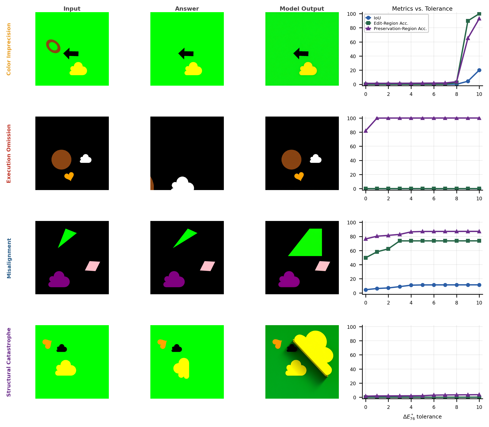
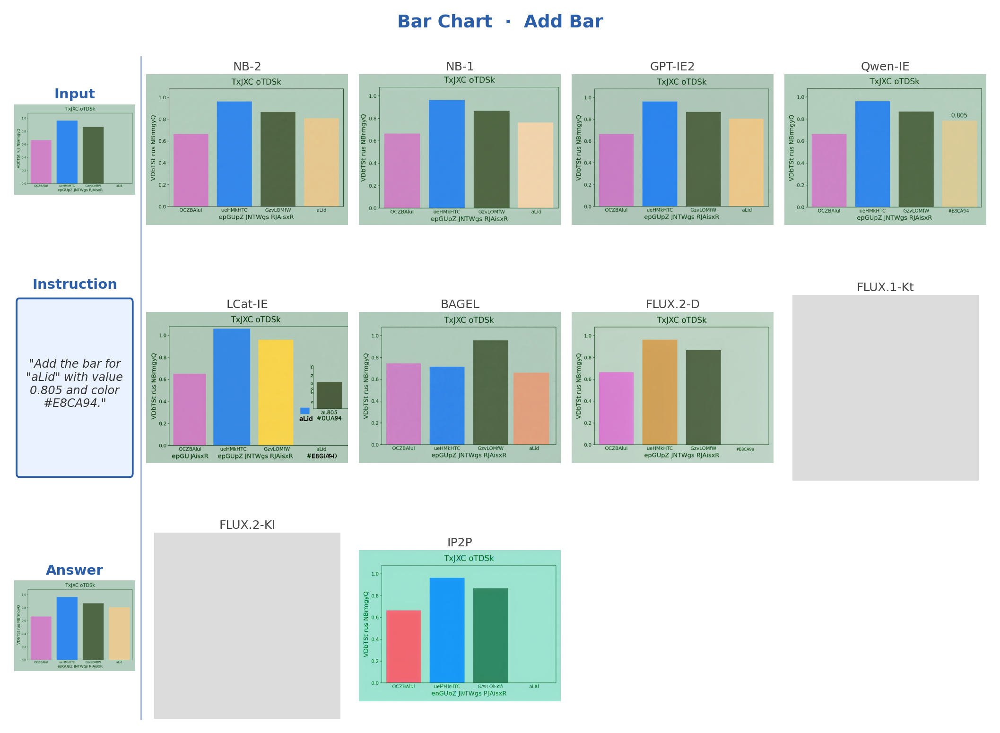

What a raster editor does in one click — AI still can't.
PaintBench is a procedurally generated benchmark for precise visual editing —
every problem has exactly one correct answer, verified at the pixel level with no model judges.
The best image-editing model today scores 23.5%. [TODO: update]
Every problem is generated from a random seed: a new seed produces a fresh scene,
fresh instruction, and a unique correct output — making memorization impossible.
Tasks span a gradient from pixel-formula operations to spatial transformations requiring
exact geometric reasoning. No web-scraped data. No ambiguous outputs.
⟳
Dynamic Generation
Fresh problem sets on demand. Each seed produces a unique (input, instruction, answer) triple — the benchmark cannot be contaminated by training data exposure.
✓
One Correct Answer
Every output is compared pixel-by-pixel to the ground truth via CIE ΔE₇₆ color distance. No human ratings, no LLM judges, no perceptual proxies.
◈
Atomic Operations
Tasks target the building blocks of visual editing — recoloring, transformation, removal — the same primitives a raster editor handles trivially in a single command.
InputGround Truth
02 / Results
The benchmark is far from solved.
mIoU scores (%) across 11 ΔE tolerance levels, 10 leading models.
The top image-editing model achieves 23.5% overall —
well below what any raster editor achieves trivially.
Geometric and structural tasks expose a hard capability gap:
models fail not because they misunderstand the instruction,
but because their spatial rendering engine can't execute it precisely.
[TODO: update table with new benchmark numbers after regeneration]
Model
Overall
Geometric Transformation
Structural Manipulation
Color Change
Symbolic Reasoning
Translation
Rotation
Reflection
Scaling
Shearing
Construction
Removal
Copying
Border
Cropping
Recolor
Flood Fill
Blending
Gradient
Point Ops
Comparison
Ordering
Pattern
Counting
Legend
0%100%mIoU per task · hover for exact score
03 / How Models Fail
Four canonical failure modes.
Across all evaluated models, failures cluster into four qualitative types —
each revealing a different facet of the precision gap between generative plausibility
and structural execution. The pixel-level error map tells a story
that a language model judge would miss.

No EditColor ImprecisionStructural ImprecisionCatastrophic Edit
Each row: input image · ground-truth answer · model output · per-threshold accuracy curves.
No edit: model returns the input unchanged (BAGEL, construction).
Color imprecision: edit location is correct but colors deviate (Nano Banana 2, gradient).
Structural imprecision: shape is approximately right but misaligned (LongCat, translation).
Catastrophic edit: output is unrelated to the instruction (BAGEL, cropping).
04 / Generalization
TinyGrafixBench: primitive failures compound in the wild.
Data visualizations are built from the same geometric primitives as PaintBench scenes —
bars, points, lines, nodes. We hypothesize that a model struggling to manipulate basic shapes
in a sterile environment will similarly fail on precise structural edits to scientific figures.
TinyGrafixBench applies PaintBench's deterministic evaluation framework to chart editing,
across five chart types and 600 problems.
→
Model rankings on TinyGrafixBench closely mirror PaintBench.
Nano Banana 2 leads at 16.6%; GPT Image Edit 2 follows at 15.6%.
All other models cluster below 5.6%. Rankings track PaintBench despite the added difficulty
of understanding structured chart imagery — validating our primitive benchmark as a proxy for
harder real-world editing tasks. [TODO: update scores]

Bar Chart — tasks: add bar, recolor bar, remove bar, sort bars.
Each row shows the input chart, ground-truth answer, and outputs from all ten models.
ModelTinyGrafixBench mIoU [TODO: update]
Nano Banana 2
16.6%
GPT Image Edit 2
15.6%
Nano Banana 1
5.6%
All others
<5%
Full per-chart-type breakdown in the paper.
Authors
Kai Xu · Ellis Brown · Shrikar Madhu ·
Rob Fergus · He He · Saining Xie
New York University
Citation
@inproceedings{paintbench2026,
title = {Deterministic Evaluation of Precise Visual Editing},
author = {Xu, Kai and Brown, Ellis and Madhu, Shrikar and
Fergus, Rob and He, He and Xie, Saining},
booktitle = {Advances in Neural Information Processing Systems
(Evaluations and Datasets Track)},
year = {2026}
}